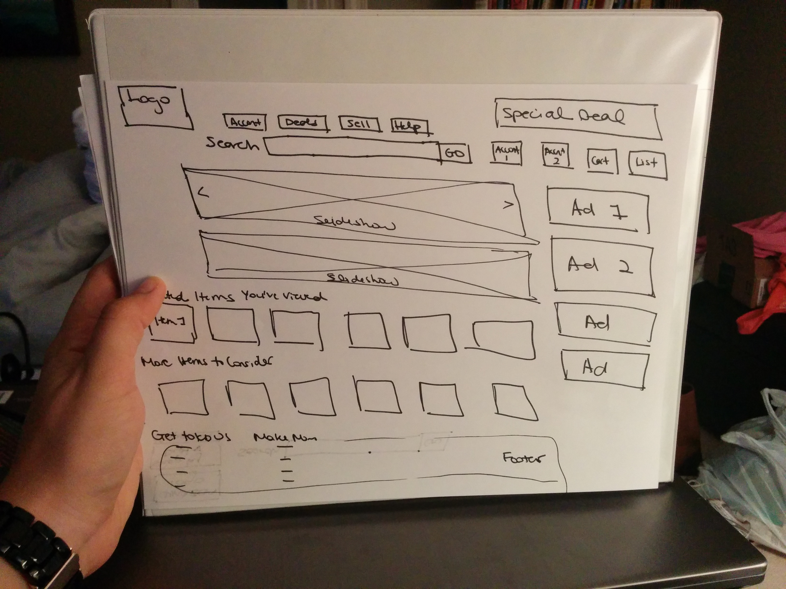
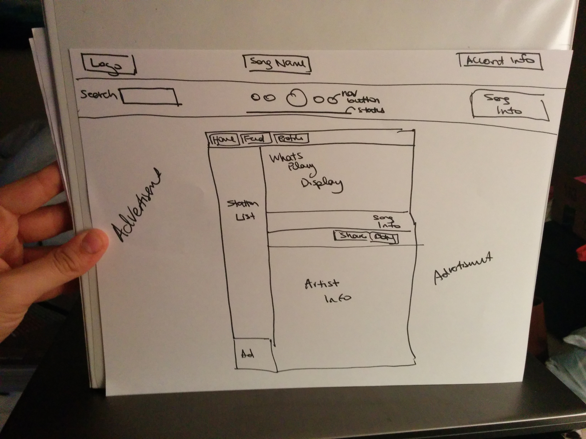
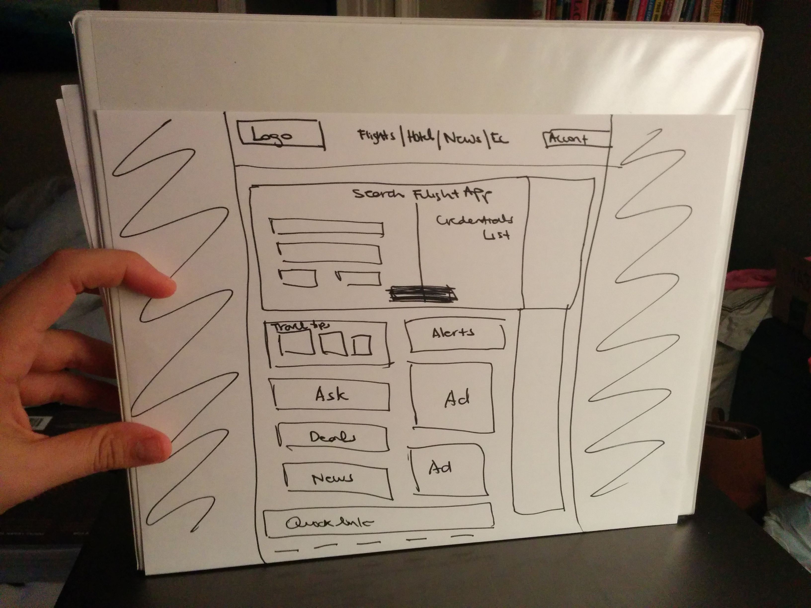

The website is solving people's problem of having accessing to a wide market of goods at low prices and short shipping times. Given there are so many types of products that a user could be looking for when entering the site, it is difficult to cater the homepage to each user's needs.
The website is solving people's problem of accessing free music and identifying/finding new music that aligns with their preferences. The process of finding new music for the user is a black box process and thus the site must depends on their song selection alone, hooking the user on the first few songs provided, in order to win the users trust/prove to the user that the site can provide he or she with music he or she likes.
The website is solving people's problem of browsing all possible flight choices across the globe - most travel search engines fail when you fly across country borders. There is a challenge of showing the user the flights he or she most desired when there are 1000+ options given the user's initial search criteria.
